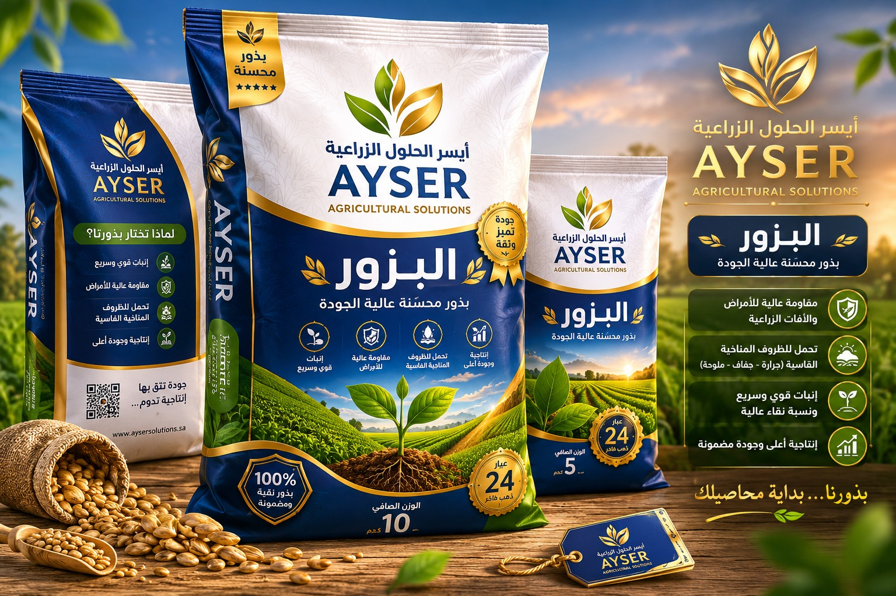
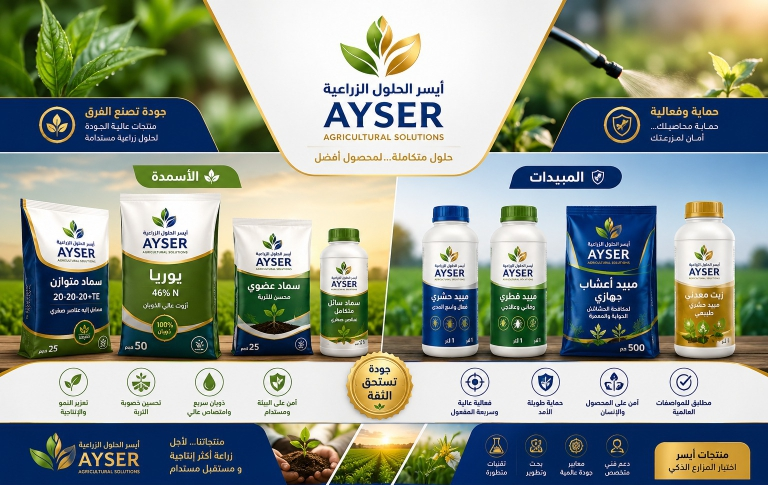
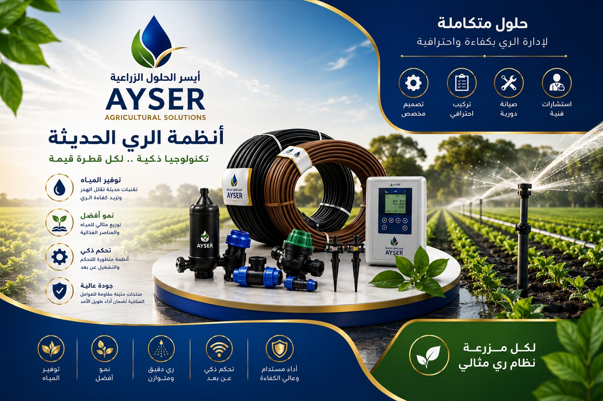

عن أيسر الحلول الزراعية
من نحن
شركة أيسر الحلول الزراعية هي شركة رائدة في مجال الابتكار الزراعي، تأسست بهدف تطوير حلول زراعية مستدامة ومبتكرة.
رسالتنا
نسعى لتطوير حلول زراعية مبتكرة تساهم في تحقيق الأمن الغذائي وزيادة الإنتاجية، مع الحفاظ على البيئة والموارد الطبيعية.
رؤيتنا
أن نكون الشركة الرائدة في تقديم الحلول الزراعية المبتكرة في المنطقة، وأن نساهم في تحقيق الاكتفاء الذاتي الغذائي.
0+
مشروع منفذ
0+
دولة حول العالم
0
اختراع مسجل
0+
جائزة عالمية
منتجاتنا

بذور محسنة
بذور عالية الجودة مقاومة للأمراض والظروف المناخية القاسية

أسمدة ذكية
أسمدة متطورة تزيد من خصوبة التربة وتحسن نمو المحاصيل

أنظمة ري متطورة
أنظمة ري ذكية توفر في استهلاك المياه وترفع كفاءة الري
اختراعات أيسر الحصرية
أيسر حصاد
آلة متخصصة في حصاد البصل والبطاطس بتقنية ذكية تضمن انتقاء المحاصيل الناضجة بدقة عالية دون تلف.
حاصدة أيسر الكهربائية للأعلاف
حاصدة كهربائية بالكامل يتم التحكم فيها عن بعد أو عبر برنامج تشغيل مخصص لحصاد وجمع الأعلاف الخضراء والجافة بكفاءة عالية.
أيسر جرعة
اختراع يسهل الاستهلاك الجزئي من العبوات دون الحاجة لفتح كامل العبوة، مثالي للمواد الغذائية والدوائية.
أيسر فرش
نظام آلي متكامل لإفطار الحرمين الشريفين في رمضان، يعمل بشكل آلي بالكامل لخدمة ملايين الصائمين.
أيسر سيفتي فيش
قابس كهربائي آمن تماماً للأطفال، مزود بنظام أمان ذكي يمنع الصدمات الكهربائية ويحمي من مخاطر الكهرباء.
منظومة أيسر الهيدروليكية للشتلات
ماكينة زراعية متطورة لنقل وإعادة زراعة الشجيرات الصغيرة من موقع لآخر دون إتلاف الجذور، بنظام هيدروليكي دقيق.
منقلة أيسر للشتلات
أداة زراعية يدوية لاقتلاع الشتلات لإعادة زراعتها في موقع آخر، مصممة للحفاظ على الجذور سليمة بسهولة الاستخدام.
مجذر أيسر للمشاتل
أداة متخصصة لتجهيز التربة في المشاتل وتهيئة البيئة المثالية لنمو البذور والشتلات، تعمل بكفاءة عالية.
مجذر أيسر الهوائي
نظام هوائي متطور لتهوية التربة وتحسين جودة المشاتل باستخدام تقنيات الضغط الهوائي لتحسين نمو الجذور.
جبيرة أيسر
جبيرة طبية ذكية للكسور مزودة بنظام توزيع ضغط ذكي وتهوية لتعجيل التعافي وتقليل مدة العلاج.
مقوم أيسر
جهاز ذكي لتربية النباتات بشكل مستقيم، يساعد في نمو النباتات المتسلقة والمتدلية بطريقة صحيحة وجذابة.
مفتاح أيسر
مفتاح ذكي لفتح العبوات للاستهلاك الجزئي بنظام كهربائي أو يدوي، يسهل الاستخدام اليومي لجميع أفراد الأسرة.
حظيرة أيسر
حظيرة ذكية متكاملة لتربية الحيوانات، مزودة بأنظمة تغذية وتنظيف ومراقبة عن بعد، لتحسين إنتاجية الثروة الحيوانية.
أيسر كاميرا
نظام كاميرا ذكي لاكتشاف المطبات والحفر والحيوانات التي تعبر الطريق، لتنبيه السائق تلقائياً وزيادة الأمان.
أيسر نقل
نظام نقل ذكي للمواد الزراعية والمحاصيل، يضمن سلامة المنتجات أثناء النقل والتخزين مع تقليل الفاقد.
أيسر طاقة
مركبة طاقة متنقلة تعمل بالطاقة الشمسية، تخدم المناطق النائية وفي حالات الطوارئ لتوفير الكهرباء النظيفة.
راوي أيسر
نظام ري متنقل يروي أكثر من مشروع وأكثر من حقل في آن واحد، يوفر المياه والطاقة ويزيد الإنتاجية الزراعية.
درع أيسر للحريق
نظام إطفاء ذكي متخصص لحرائق المزارع والغابات، يعمل بالاستشعار المبكر والإطفاء التلقائي لحماية المحاصيل.
أيسر للنخيل
آلة زراعية متخصصة في حصاد وتقليم جريد النخيل، تعمل بشكل آلي وتوفر الوقت والجهد مع الحفاظ على صحة النخلة.
شاتل أيسر
نظام حماية ورعاية متكامل لنمو أقوى للشتلات، مزود ببيئة محكمة لتعزيز النمو ومقاومة الأمراض.
غراسة أيسر الصحراوية
آلة زراعية لزراعة الشتول بشكل آلي في جميع أنواع التربة، مصممة خصيصاً للظروف الصحراوية القاسية.
أيكو أيسر للتجذير
نظام متقدم للتجذير الهوائي، يساعد النباتات على تكوين جذور قوية في البيئات المختلفة لتعزيز النمو والاستدامة.
أيسر مصد
مصد طبيعي وصناعي لحماية النباتات من العوامل الجوية القاسية والرياح والعواصف الترابية، لزيادة الإنتاجية.
ساند أيسر
نظام ساند ذكي لضمان نمو آمن للشتلات ورعايتها في مراحل نموها الأولى، مع دعم متكامل للجذور والسيقان.
أيسر محور
نظام ري ذكي متطور يوفر المياه بنسبة تصل إلى 70% مع تحكم كامل عن بعد، وتوزيع مثالي للمياه حسب احتياج كل محصول.
رفيراء - مجرف أيسر
ماكينة متخصصة لتنظيف القنوات المائية من الحشائش والنباتات الضارة، تعمل بكفاءة عالية لتحسين تدفق المياه.
أيسر سقاي
نظام ري مبتكر يعتمد على تقنيات حديثة لتوزيع المياه بشكل مثالي وفقاً لاحتياجات كل محصول، يوفر الجهد والموارد.
حاضنة أيسر
حاضنة لنقل آمن وذكي للشتلات والمواد الزراعية، مزودة بنظام تعقيم وتهوية وتبريد ذكي للحفاظ على جودة المنتجات.
أيسر استزراع
حوض متكامل لتربية الأسماك في المجاري المائية، يعمل على صيد وتربية الأسماك بنظام آلي لتحقيق استدامة الموارد السمكية.
سور أيسر
سور ذكي متكامل للحماية والتأمين، مزود بنظام إنذار وري وتعليف ذكي للحيوانات، لحماية المزارع والثروة الحيوانية.
أيسر بيو
نظام متكامل لتحويل النفايات الزراعية والعضوية إلى سماد عضوي عالي الجودة، يساهم في تحقيق الاستدامة الزراعية.
أيسر للنخيل (النسخة المطورة)
آلة متطورة لحصاد وتقليم جريد النخيل تعمل بنظام ذكي بالكامل، مزودة بتحكم عن بعد وتقنيات حديثة لزيادة الإنتاجية.
فريق عملنا
ياسر الصديق
مدير الشركة
خبرة 10 عاماً في المجال الزراعي
المهندس علاء
مديرة الأبحاث والتطوير
دكتوراه في الهندسة الزراعية
المهندس هشام
خبير زراعي
متخصص في الزراعة المستدامة
المهندس محمد
خبير زراعي
متخصص في الزراعة المستدامة
المهندس نعمان
خبير زراعي
متخصص في الزراعة المستدامة
أبرز إنجازاتنا
| الإنجاز | التاريخ | المجال | الحالة |
|---|---|---|---|
| جائزة الابتكار الزراعي | 2023-06-15 | الزراعة الذكية | مكتمل |
| براءة اختراع نظام ري ذكي | 2023-04-10 | تقنيات الري | مكتمل |
| مشروع زيادة إنتاجية القمح | 2023-08-22 | بحوث المحاصيل | قيد التنفيذ |
المشاريع الحالية
| اسم المشروع | المسؤول | تاريخ البدء | تاريخ الانتهاء | الحالة |
|---|---|---|---|---|
| تطوير بذور مقاومة للملوحة | د. سارة الباحث | 2023-09-01 | 2024-03-01 | قيد التنفيذ |
| نظام الزراعة الذكية في المناطق الحضرية | م. محمد التقني | 2023-07-15 | 2024-01-15 | قيد التنفيذ |
التقارير والإحصائيات
هنا يمكنك عرض التقارير الشاملة عن أداء الشركة والمشاريع والإنجازات.
شركاؤنا
نتعاون مع نخبة من الشركات والمؤسسات الرائدة لتحقيق مستقبل زراعي أفضل
اتصل بنا
نحن هنا لمساعدتك
هل لديك استفسار أو تريد شراكة؟ لا تتردد في التواصل معنا وسنرد عليك في أقرب وقت.
- +249 509 312 231
- info@aisar-agri.com
- المملكة العربية السعودية
- +249 509 312 231